吸い込まれる猫 [梅吉]
どこのおうちでもにゃんこに大人気のダンボール箱。
梅吉の場合は中に入って寝ることはほとんどなく潜んだりして遊ぶ場所。

なので置き方はこのようにひっくり返すのか基本です。
と、ひっくり返したとたんやって来ましたよ。

さっそく吸い込まれていきます(*>艸<)
（無修正）

今回は小窓を付けてみました。

大正解のようでーす！
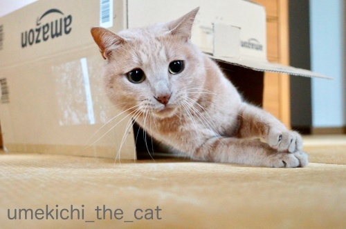
じゃらしに反応して飛び出してくるのですが
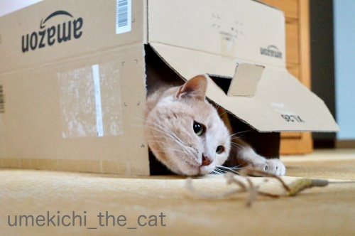
しゅるしゅると吸い込まれていきます。

狙って・・・
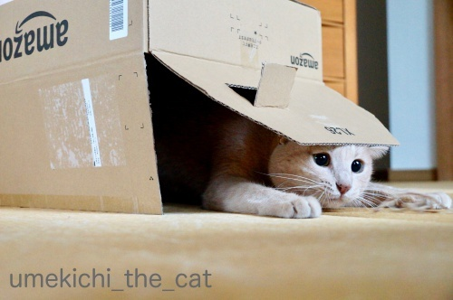
ズババッ！
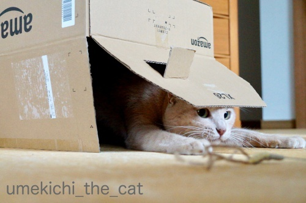
そしてまた吸い込まれる。
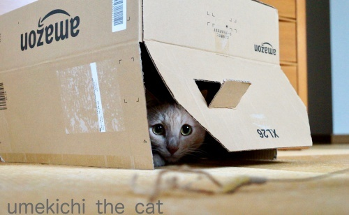
楽しいですかー0(≧▽≦)0
おかーさんは嬉しいですよ＾＾

こちらはお手伝いの風景。
衣替え途中で引き出しを抜いたところに吸い込まれようとしましたが

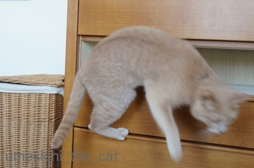

無理でした。
残念でしたね( ´艸｀)
 ↑ガブッと一押し↑
↑ガブッと一押し↑
ダンボールの小窓は
切り込みのところに入れて入り口をオープンに保てるように。
工作苦手ですが頑張りましたよ(๑˃̵ᴗ˂̵)و
･゜ﾟ･*:.｡..｡.:*･゜ﾟ･*:.｡. .｡.:*･゜ﾟ･*･゜ﾟ･*:.｡..｡.:*･゜ﾟ･*:.｡..｡.:*･゜ﾟ･*
「ボヘミアン・ラプソディ」を観てからQUEEN病にかかっております。
毎日サントラやその他アルバムを聴きまくりです。
YouTubeに1986年のウェンブリー・スタジアムでの伝説のライブ動画もあったりして、危険、危険。
もちろんライブ・エイドの動画もあります。
気になる方は探して見てください！！
で、今回私のオススメはこちら！
久しぶりに見ましたがこれ、大好きなんです！
名作なのでご存知の方も多いのではないでしょうか＾＾
「ボヘミアン・ラプソディ」のMVご覧になったことのある方なら大爆笑間違い無しwww
グッチ裕三さんってすごい！
（出張中のおっとから指摘があったので追記
このパロディはかつてNHK教育テレビ：現在はEテレの子供番組
『ハッチポッチステーション』で放送されたもの。
子供よりも親世代にウケてた番組です。現在は終了しています。）
そうそう前回大切なことを書き忘れていました。
フレディは大のネコ好き。多頭飼いしていました。
大きなお屋敷に引っ越したときは１にゃん１部屋なんて親バカっぷり。
（フレディの孤独を強調する場面でもあるのですが・・・・・）
どうです？フレディの好感度がますますアップしましたか(^_－)☆
梅吉の場合は中に入って寝ることはほとんどなく潜んだりして遊ぶ場所。

なので置き方はこのようにひっくり返すのか基本です。
と、ひっくり返したとたんやって来ましたよ。

さっそく吸い込まれていきます(*>艸<)
（無修正）

今回は小窓を付けてみました。

大正解のようでーす！
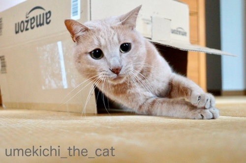
じゃらしに反応して飛び出してくるのですが
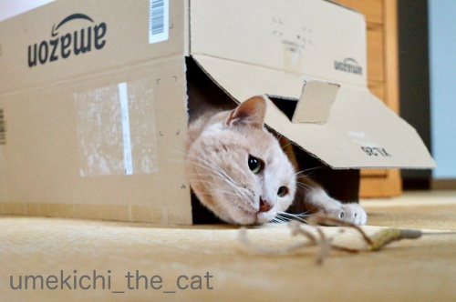
しゅるしゅると吸い込まれていきます。

狙って・・・
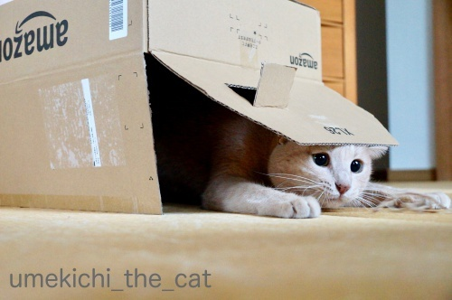
ズババッ！
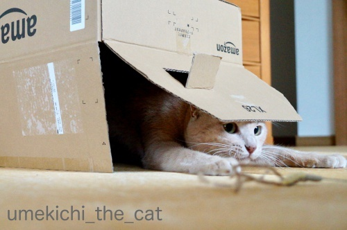
そしてまた吸い込まれる。
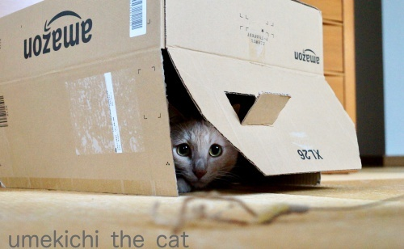
楽しいですかー0(≧▽≦)0
おかーさんは嬉しいですよ＾＾

こちらはお手伝いの風景。
衣替え途中で引き出しを抜いたところに吸い込まれようとしましたが

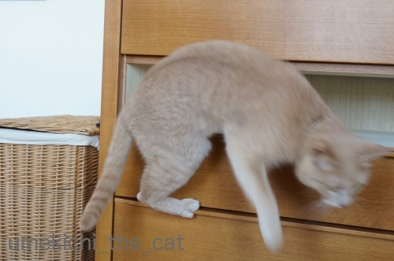

無理でした。
残念でしたね( ´艸｀)
ダンボールの小窓は
切り込みのところに入れて入り口をオープンに保てるように。
工作苦手ですが頑張りましたよ(๑˃̵ᴗ˂̵)و
･゜ﾟ･*:.｡..｡.:*･゜ﾟ･*:.｡. .｡.:*･゜ﾟ･*･゜ﾟ･*:.｡..｡.:*･゜ﾟ･*:.｡..｡.:*･゜ﾟ･*
「ボヘミアン・ラプソディ」を観てからQUEEN病にかかっております。
毎日サントラやその他アルバムを聴きまくりです。
YouTubeに1986年のウェンブリー・スタジアムでの伝説のライブ動画もあったりして、危険、危険。
もちろんライブ・エイドの動画もあります。
気になる方は探して見てください！！
で、今回私のオススメはこちら！
久しぶりに見ましたがこれ、大好きなんです！
名作なのでご存知の方も多いのではないでしょうか＾＾
「ボヘミアン・ラプソディ」のMVご覧になったことのある方なら大爆笑間違い無しwww
グッチ裕三さんってすごい！
（出張中のおっとから指摘があったので追記
このパロディはかつてNHK教育テレビ：現在はEテレの子供番組
『ハッチポッチステーション』で放送されたもの。
子供よりも親世代にウケてた番組です。現在は終了しています。）
そうそう前回大切なことを書き忘れていました。
フレディは大のネコ好き。多頭飼いしていました。
大きなお屋敷に引っ越したときは１にゃん１部屋なんて親バカっぷり。
（フレディの孤独を強調する場面でもあるのですが・・・・・）
どうです？フレディの好感度がますますアップしましたか(^_－)☆

カフェオレ色の梅吉

梅吉 2023年8月10日 永眠


梅吉と出会った譲渡会

犬猫の理由なき殺処分ゼロ
妄想広告
UMEKICHI 光

爆発的に早い！
時々攻撃的！
Thanks to Mr.Boss365
爆発的に早い！
時々攻撃的！
Thanks to Mr.Boss365

梅吉さんハウス楽しんでますね。
by ニコニコファイト (2018-11-15 07:07)
おめめキラキラ♪ ワクワクした感じが伝わってきます♪
楽しそうですねぇ～
シュルンと吸い込まれる！
そして期待したおめめ！
可愛くてたまりません(*‘∀‘)
オープン出来るようにした細工！
愛情たっぷりですね♪
タンスは・・・残念でしたね（笑
by きぃ (2018-11-15 07:30)
こういう手作りのおもちゃを喜んでくれたら
次も頑張ろう！って思いますね＾＾
by ぽちの輔 (2018-11-15 07:38)
窓から覗いてるのが可愛い過ぎーっ(≧∀≦)
犬のおまわりさん動画、知らんかったわ。
元動画へのリスペクトが素晴らしい！
ここまできちんとパロると、フレディも喜んでるはず！！
by よーちゃん (2018-11-15 08:42)
梅吉さんもニャマゾン箱には夢中になっちゃうのですね！
隠れて覗いて楽しそうですね(^^)
by ma2ma2 (2018-11-15 10:03)
おはようございます。
ダンボール箱を逆にする発想はなかったです！！今度試してみます！！
また、ちぃさん作成の「小窓」が独房？の「のぞき窓」みたいで・・・
梅吉君の視線表情が素晴らしくイキイキと表現されています。
梅吉君、悪人視線になっている？（笑）！！楽しそう！！
切込みを入れるだけで作成。無駄にしないプロ職人の技を見習います。
フレディは大のネコ好き！！似合いますね「猫好きに悪い奴はいない」です。
多頭飼い？みんな「チャンピオン」猫かな！？(=^･ｪ･^=)
by Boss365 (2018-11-15 11:17)
梅吉さんの目線ロックオンがステキですね。
ボヘミアンラプソディ見比べてかなり笑えましたが、そもそも元歌がシュールだと思うのは私だけなのかしら。フレディが猫好きと聞いたら映画を観たくなりました。
by zombiekong (2018-11-15 11:22)
梅吉さん覗き窓からの、寄り目っちからの〜白目っち、可愛いです。
私も色々なところを工夫する時、
縦置き横置き試しますが、流石に逆さはなかった（笑）
今度迷ったら逆さをやって見たいです。
また、入り口をオープンに保てる工夫も格好良いです。
youtubeでQUEENを観ていたら、映画も見たくなりました（笑）
映画館、苦手だけど行くかな。
by kiki (2018-11-15 12:38)
ダンボールを逆さにする！！
アイデアそのままパクらせてください！！！(#^^#)
梅吉さん、目がくりんくりん♪
小窓の位置が絶妙。猫でなくてものぞきたくなっちゃいます♪
ウチのもダンボールは中で寝るよりフタをパタパタしたり、頭で押して歩くのが好きみたいです^^;
犬のおまわりさん、パロディもここまで真剣にやるとアートになりますね(≧▽≦) 改めて本家のMVも見ました。懐かしいです^^
by ゆきち (2018-11-15 12:39)
犬のおまわりさん、初めて見ました〜☆
Queen大好きでした。早逝、勿体無かったな〜。
映画も見に行きたいです。
梅吉さんも狭いところ大好きですね。
気をつけないと、引き出しに挟まっちゃうかも、、確認必須ですね。
by nachic (2018-11-15 13:22)
猫は箱物は好きですからね～(^^)
家の猫も狭い隙間や段ボールが大好きでした。
で、自分もクイーン病にかかってしまいました。これは長引きそうです・・・。
もちろん犬もおまわりさんも検索して見てました(^_^;)
by kou (2018-11-15 16:47)
そうなの。猫って段ボールっに吸い込まれちゃうのよね。
梅吉さんは逆さ段ボール派ですか(*^-^*)
可愛いな～って見ていたら、４枚目のお目目がなんだかツボｗ
じゃらしを追っている目なのかな～。なんだかおもしろ可愛くない？
犬のおまわりさん、知らなかった～！
ちぃさんがQUEEN病だと梅吉くんにも感染すること間違いなしだね(≧▽≦)
家の子たちももちろん感染していますｗ
by emi (2018-11-15 17:15)
梅吉さん、楽しそう♪
瞳がルンルンしてますね。^^)
引き出しはひょっとして高さ7.5cm（だったかな？）の基準を満たしていなかったのでしょうか。
犬のおまわりさん、初めて見ました。面白いですね！
クイーン、有名な曲が多いですが、ベースを所有している（弾かんのかい。）私としてはベースラインが特徴的な「Another one bites the dust」が好きです。
ううやっぱり、じっくりコトコト「ディーコン煮」がいい！ ^^;ﾅﾝﾉｺｯﾁｬ
by yes_hama (2018-11-15 20:11)
梅吉さん、なんて楽しそうなのー！
吸い込まれる後ろ姿のあんよ、そこからの小窓から覗くお目々、いや～ん♪
じゃれる時の狙うおめめが真剣さのあまり？困ったような目つきになってるのもキュートですね～＾＾
ダンボール、こんな工夫で活用できるんですね。
無理めの引き出しに入ろうとするのも可愛い＾＾
犬のおまわりさん、うっすら覚えが‥ あ、ここだ！ぶはっっと大笑い～＾o＾；
by sana (2018-11-15 20:43)
Amazon箱、気に入って吸い込まれてますね^ ^
我が家も大きさの大小関係なく寄ってきて
サッと入ってしまいます。
梅さんがいれば衣替え作業も楽しい！
by ryang (2018-11-15 21:12)
箱から顔を覗かせる梅しゃんの
表情がめちゃくちゃかわいい～！
ボヘミアン・ラプソディ、IMAXで
見てきて、とても良かったデス！
教えて下さって有難うございます！
ハッチポッチステーションも子供と
一緒にリアルタイムで見ていたので、
教育TVでここまでやるか！と爆笑
していました。懐かしいなあ～＾＾
by うりくま (2018-11-15 21:29)
梅吉さん、とっても楽しそうですねぇ( ^ω^ )
大好きなダンボールからの狙って待ち伏せ攻撃、
お母さんに遊んでもらってヒゲがピン！で黒目がまん丸=(^.^)=
こんな風に遊んでくれると嬉しいですよねぇ♪( ´▽｀)
うちのニャンズは私との遊びだといつの間にか寝てることがあります(ｰ ｰ;)
by ニッキー (2018-11-15 22:05)
梅吉さんの前世はヤドカリさんですね^^;
南紀でヤドカリを見てきたのでそう思いました。
フレディは猫さん好きなんですね。知らなかった。嬉しいです＾＾
by riverwalk (2018-11-15 22:08)
うふふふ
見事に吸い込まれてますね～
出てきてもまた吸い込まれる
脳内で動画化して楽しみましたわｗｗｗ
by リュカ (2018-11-16 10:10)
小窓から覗く2枚目 最高です。さすがです。押さえるところは押さえていらっしゃる(*^^*)
by palpal (2018-11-16 16:11)
普段は白目がちな梅吉さんが何と黒目に?
これは貴重ではありませんか（≧∇≦）♪
猫さまの「わくわく黒目」が大好物☆
箱に入るではなく、吸い込まれる…だったのですね。それは考えた事なかった?
今度逆さにして設置してみよwww
ウチもお手伝い隊としてすぐに出動してきますが…全く片付けが進みません?だから片付けの頻度自体が少なく…ゴニョゴニョ…^^;
by くつしたにゃん (2018-11-16 17:40)
小窓にしっかりひっかかってくれる梅吉さん
かわいいですね。
犬のおまわりさん懐かしいな。
明日、映画見てきます＾＾
by ふにゃいの (2018-11-16 23:53)
小窓いいね（ﾟ□ﾟ）面白い。
by 英ちゃん (2018-11-17 08:28)
本日土曜日のNHK地上波の23時からクイーン特集が！
ってこのコメント、放送前までに見てくれるかなあ。^_^;
by yes_hama (2018-11-17 19:08)
すっごい段ボール活用術！
ゆきちさんちの段ボールもスゲーって思ったけど、ちぃさんの工作も文化芸術大賞受賞ものです。
うちは割と小さめな段ボール、蓋を三方切って一方を残し、ねこあご置台。そんなちっちゃな工夫しか思い浮かびませんでした。も、これからはちょいとデカい段ボールで工作しますよ！小窓、これ大事ね。今まで気が付かなかった。
なんか組み立ててるらしい現場写真があるけど、ムズイ感じ＠＠；あたし出来ないかも・・・と甘えてるわけじゃなくｗ
とにかく、うちニャンズにも段ボール革新いたしますニャ(=^・・^=)
前の記事のこと。
梅吉さんの足のわきにある、からあげのような足。鳥なんでしょう。よくもまあみつけました。梅吉さんぴったりそっくりのもも筋肉。そもそも梅吉さん、よくその外レッグを綺麗に写させてくれました、凄いよ。
ふくろう＾＾；まじ(笑)
炊飯器で炊いたお米をお料理と頂くって楽しい。
結局、お米が決めて？？？うちは、米こだわる。けど、炊き方も変えようかと検討中です。いろいろ書いちゃいましたぁ(^0_0^)
by ake_i (2018-11-17 22:23)
しゅるるるる〜・・・っと吸い込まれてますね^^
ひょろひょろしている「じゃらし」も気になります。
たんすの隙間、残念！（笑）
（うちの茶色は無理やり入りそうです・・・）
犬のおまわりさんラプソディ、壮大すぎてすごい！（笑）
ボネミアン・ラプソディの40周年を記念したビールなんてのがありました。
空瓶、飾ってます^^
by Ja-Kou66 (2018-11-18 00:25)
ニコニコファイトさん＞
思いっきり楽しんでもらえました＾＾
これでまた捨てられない箱が増えました・・・
きぃさん＞
この日は珍しく黒目がちののキラキラお目目でした！
白目ばかりじゃないぞ、とアピールでしょうか(*>艸<)
タンスの隙間はちょっと前だったら無理矢理入っていましたが
この日はあっさり諦めていました。
大人になったのか単なる気まぐれなのかは不明ですwww
ぽちの輔さん＞
そうやってにゃんこに操られていくんですよねー ( ´艸｀)
嬉しい限りですけど＾＾
よーちゃん＞
窓の大きさがちょうど良かったみたいですよ ( ´艸｀)
犬のおまわりさん、子供番組の一コーナーにしては
手が混みすぎていますよね！
それだけグッチさんがQUEENをリスペクトしてるんだなって
思いました＾＾
これ見た子供たちはこのパロディを忘れずにいて欲しいです！
ma2ma2さん＞
新しいニャマゾン箱が来ると必ずチェックしにきます！
そして新しい箱の方がなぜかウケますwww
Boss365さん＞
小窓、梅吉も覗きますがもちろん私も覗きます！
覗くと大喜びのねこパンチが飛んで来るので
独房の監視窓の雰囲気はありませんけれどw
「ボヘミアン・ラプソディ」のエンドロールに
フレディと猫が写ったプライベート写真が出てきます。
それを見ているとごくごく普通の猫をとっても可愛がっていて・・・
それを見て「ああ、フレディいい人！」なんて思っちゃいました＾＾
にゃんこはみんな「チャンピオン」同意見です(^_－)☆
zombiekongさん＞
この日は白目ではなくめっちゃ黒目でロックオンでした＾＾
「ボヘミアン・ラプソディ」は発売当初レコード会社からも
どうなのか？という意見もあったのでかなりシュールというか
枠にとらわれない楽曲だと思います。
ロックでありながらオペラ的な要素あり（映画の中でフレディが言ってます）
バラードかと思えばアップテンポにもなり。
私は音楽史上屈指の名曲だと思っていますよー(๑˃̵ᴗ˂̵)و
kikiさん＞
うふふ＾＾のぞき穴からお約束の変顔いただきました！
逆さ置き、なかなかのアイディアでしょう( ´艸｀)
猫様に喜んでいただけるなら縦でも横でも逆さでも裏返しでも！！
あらゆる可能性を探っております。
「ボヘミアン・ラプソディ」
kikiさんまで動かすとは私の映画評もなかなかやるではないですかw
ちがう、ちがう偉大なQUEENの力でございますm(_ _)m
大音響で音楽が流れている時間が長いので
映画館によくいるおしゃべりしながら見る人や
ゴソゴソ動く人、全く気にならないと思います＾＾
というか映画に集中してみんな身じろぎもせず観てましたよ。
ゆきちさん＞
逆さまダンボール、こてつくんも大喜び間違いなしだと思います！
うつぼねこ再び！？のお姿が見られそうですね＾＾
小窓はぜひつけてくださいねー。
こてつくんが中から覗くのはもちろんですが
ゆきちさんもぜひのぞいてください。
猫パンチが飛んできてとっても楽しいです♪
ハッチポッチステーションは他に
ディープ・パープルのパロディも秀逸です！(*>艸<)
nachicさん＞
nachicさんもQUEENお好きでしたか！
私はフレディが亡くなった年齢を超えてしまったなぁ・・・
なんて感慨にも浸りながら観ておりました。
この映画は絶対映画館で、出来ればIMAXシアターで観てください！
ライブ会場にいるような臨場感が味わえます。
手拍子したくなっちゃうこと間違いなしですよー。
引き出しを抜いた後の確認は必須です。
これからの季節はひざ掛けなどの下も・・・
今日知らずに上に座ろうとして「うぎゃっ」と言われました(｡-_-｡)
kouさん＞
kouさんちも溜まるダンボール箱でしたか ( ´艸｀)
QUEEN病、次々に感染者が出ているようですねー。
同じく私も長引きそう、治らないかもですwww
それはそれで幸せ〜。
犬のおまわりさんすでに観ていらしたのですね！
何度見ても笑えますwww
emiさん＞
流石の目の付け所ですね！！
４枚目はかわいい＆アホ顔の梅吉らしい写真だと思っています(*>艸<)
キメるところはキメる子だわ〜。
そしてとっても楽しそうでしょ♪
最近QUEENの動画を見ていると梅吉もじっと見ています。
初期のひらひら衣装？？マッチョになってからの動き？？
が面白いのかしら・・・
とりあえず「梅吉、わかっているじゃない！！」と褒めてあげてますwww
yes_hamaさん＞
引き出しの高さはもう少しあるのですが
チャレンジ精神があまりなくなってきたのでしょうか・・・
テンション高くなっている時だったら無理矢理入っていくかもですけどw
「Another one bites the dust」私も好きです！
フレディの「はぁ〜ん」（笑）と後を引く歌い方がツボで( ´艸｀)
もちろんベースもかっこいいですよねー＾＾
寒さも深まり始めじっくりコトコトディーコン煮が
ふさわしい季節になってきましたね！
観賞用盆栽ベースはお元気でしょうか・・・（ﾅﾝﾉｺｯﾁｬ・・・）
SONGS、(情報ありがとうございました！）
お母様のメアドがロジャー・メドウス・テイラー、ウケましたwww
sanaさん＞
吸い込まれる後ろ姿をお褒めいただきありがとうございます＾＾
無防備な感じで可愛いですよねー。
私はいつもおちりをつんつんしちゃいますw
速攻ねこぱんちが返ってきますよ(*>艸<)
犬のお巡りさんご存知でしたか。
ハッチポッチステーションは他にも秀逸なパロディがたくさんあったなぁと。
よくまとまったダイジェスト版を見つけたので
最新ブログにアップしました！
ryangさん＞
そうそう！
箱は大小に関わらずとりあえずチェックしに来ますよね＾＾
紙袋も同じ ( ´艸｀)
衣替えは熱心なお手伝いのおかげで（？）なかなか進みませんが
来なかったら来ないで具合でも悪いんじゃないかと
心配になってしまいます(｡-_-｡)
うりくまさん＞
可愛いお顔から（親バカ）梅吉らしいアホ顔まで
多彩に披露してくれました＾＾
この日は珍しく黒目がちでもあり・・・
夏の白眼は終わったんだなぁと季節の移り変わりを
しみじみと感じましたwww
ハッチポッチをリアルタイムでご覧になっていたとは！！
デーブ・パープル、ヒマン・ターナー、マイケル・ハクション等
秀逸パロディが目白押しでしたよね＾＾
（私はYouTubeで見ました。）
ニッキーさん＞
白目がトレードマークの（？）梅吉も
この日はおヒゲがボーン！真っ黒お目目でハッスル（笑）でした＾＾
ダンボールは大変気に入ってくれたのですが
手が離せなくて遊べない時も
箱に潜んで「じーっ」と視線を送ってくるので
下僕の罪悪感がハンパないですwww
ニッキーさんの遊びは眠りを誘う薬・・・・？( ´艸｀)
riverwalkさん＞
まさに！それ！！ヤドカリさんですね＾＾
次から次に新しいお家（ダンボール）へ移動するのも
それっぽいです。
映画の最後にフレディと飼い猫のツーショット写真が出てきます。
それにもウルウルでしたー。。。
リュカさん＞
さすが！動画再生＾＾
ズササッと音付きで再生してもらえると
さらに臨場感が〜！！
palpalさん＞
そう！梅吉も（も？対抗意識ナノくん）キメるところはキメます！！
白目ではないのは冬バージョンですw
くつしたにゃんさん＞
そうなんです！
白目→黒目、季節の移ろいを感じました〜。
去っていった白目の季節を懐かしく思い出しますwww
逆さま箱へはしゅるしゅると音付きで吸い込まれますよ。
はいるきないねんけどな・・・と呟きが聞こえてきそうです！！
片付けの頻度？大丈夫！言わなきゃ誰にもわかりません(*>艸<)
ふにゃいのさん＞
さすがふにゃいのさん！！犬のおわまりさんもご存知でしたか。
前回いただいたコメントですっかりLDのことに触れるのを忘れてしまって・・
QUEENのLDとは貴重なものではないでしょうか。
当時再生機器もお持ちだったのですよね。
私の記憶ではLDの再生機器はカラオケ屋にあったくらいしか思い当たらなく・・
英ちゃんさん＞
ちょうど良い位置にあったらしく
覗いてよし、パンチを出してよしと活用してくれています(≧▽≦)
ake_iさん＞
小窓は中に入ったニャンコも楽しいですが
覗く人間も楽しいですよー0(≧▽≦)0
梅吉の場合は大喜びのねこぱんちが飛んでくるので
覗く人間はドキドキ、同時に反射神経も鍛えられますw
ぜひお試しください＾＾
前記事へのコメントまでありがとうございます＾＾
梅吉はメンフクロウですがコノハズク、ミミズク系の
ニャンコも多数いらっしゃるようでw
猫＝鳥なのでチキンレッグも然もありなん！？
我が家はお米を毎日食べるわけではないので
ちょっと美味しいお米を買ってます。
で、炊くのは炊飯器ではなく文化鍋。
ガスコンロを新調した時に専用のものがオマケで（笑）
ついてきたのですがこれで炊くと美味しくて・・・
火力の違いなんでしょうか？？
洗ってしまっておけるのも狭い我が家には嬉しいのです！！
Ja-Kou66さん＞
ひょろひょろじゃらし、気づかれちゃいましたかw
一本抜け、二本抜けしてこんな姿に。。。
このショボい感じがにゃんこゴコロをくすぐるのか
長くご愛顧いただいております(*>艸<)
犬のおまわりさんはここまで作り込んだら
フレディもお喜びかと＾＾
40周年ビールの空き瓶が気になります！！
by ちぃ (2018-11-18 19:57)